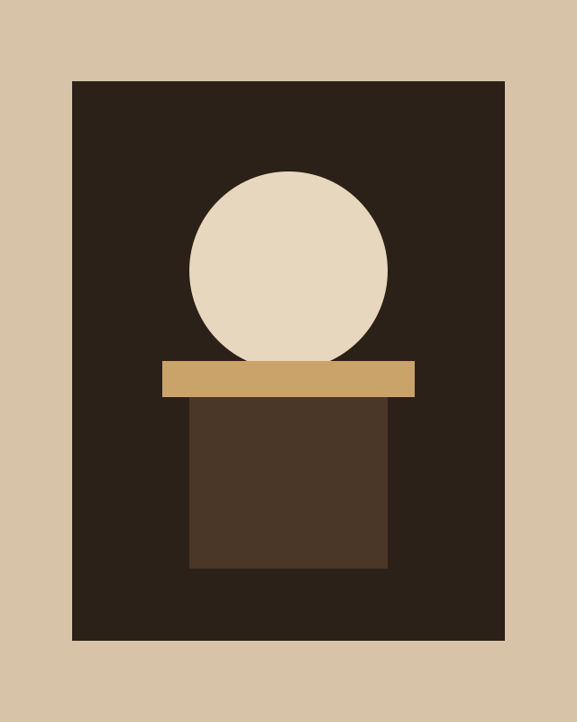

Basra · Cairo · 965–1040
Ibn al-Haytham
The scholar who taught us to test what we see.

A life spent asking how light works
Ibn al-Haytham was born in Basra and later worked in Cairo. He wrote on optics, astronomy, mathematics, and the habit of checking a claim against an experiment.
Before his work, many writers still treated vision as a ray leaving the eye. He argued the opposite: light travels to the eye from the thing you are looking at. He described the camera obscura and used it to study how images form.
He was careful about method. Guess, test, write down what happened, and do not keep a theory that the test does not support. That habit is why later scientists still read him.
His Book of Optics was translated into Latin and travelled for centuries. People who never met him still borrowed his diagrams.
Key work
- Camera obscura. A dark room and a small aperture to watch how light paints an image.
- Vision. The eye as an instrument that receives light, not a lantern that sends it.
- Book of Optics. Seven volumes on reflection, refraction, and the geometry of sight.
- Method. A claim should survive a test, not only a speech.
The duty of the man who investigates the writings of scientists, if learning the truth is his goal, is to make himself an enemy of all that he reads. Attributed to Ibn al-Haytham